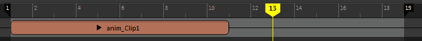
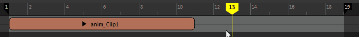
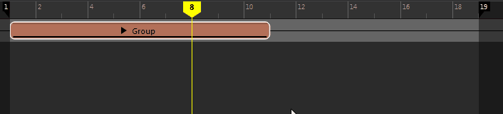

融合的片段
片段帧
单击并按住片段以查看其帧编号。

已修剪片段
当您剪切或修剪时间编辑器片段时，系统将显示一些特殊符号，向您指出片段是缩短的动画片段，还是内部包含更短动画的扩展（缩放）片段。
缩小或修剪片段时，系统将显示一个黑点，表明具有更多动画。

由于您可以将片段扩展超出内部所含动画（例如，含 10 帧的动画可能会驻留在含 100 帧的片段内）的长度，因此当您修剪片段以超出最后一个动画关键帧的长度时，系统将显示一条虚线以指示动画的原始长度（10 帧），且片段的边上会出现一个白点，指示片段在最后一个关键帧之后继续，但不包含更多动画。

对于组片段，当您缩短片段时，组片段的修剪端上同样会出现一个黑点。但是，组片段内的片段将会有一个用圆圈标记的黑点，指示该动画已扩展到片段之外，不同之处是组片段已缩短（即，组内的片段已继承组的修剪）。扩展组片段时，系统同样也会出现一个白点，表明该片段将继续扩展到动画之外。

时间视图之外的片段
三点表示轨迹包含的某些片段已超出显示的时间视图区域：
 请调整时间视图的大小，以便查看这些片段，或者按 A 键以框显时间视图中的一切内容。
请调整时间视图的大小，以便查看这些片段，或者按 A 键以框显时间视图中的一切内容。
注： 这些符号也适用于音频片段。